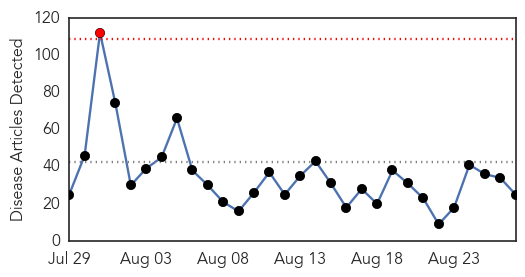
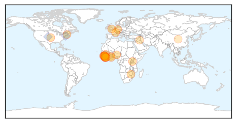
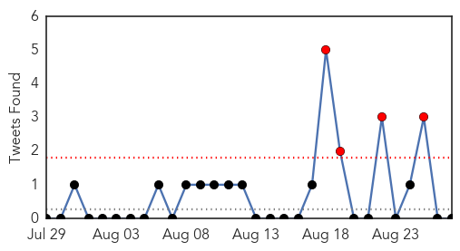
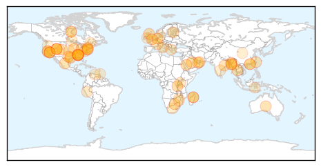

Ebola
30-Day Web Trend
1 alerts, 0 warnings

30-Day Twitter Trend
0 alerts, 0 warnings

Article Locations
Article Confidences

Top Articles:
- 1.000
- 'We Were Lucky This Time': How Experts are Battling the Next Ebola
- 1.000
- Ebola in graphics: The toll of a tragedy
- 1.000
- Watch Sierra Leone's Last Known Ebola Patient Celebrate Being Well!
- 0.999
- Scientists develop therapies to protect humans from Ebola virus
- 0.999
- On the trail of an Ebola cure
- 0.999
- LIBERIA: Plan Int’l, Medical Corps Int’l Launch Partnership To Respond To Ebola Fight
- 0.999
- As Sierra Leone waits for Ebola all-clear, its emotional scars
- 0.998
- As Sierra Leone Waits for Ebola All-Clear, Its Emotional Scars Will Take Longer to Heal
- 0.998
- Ebola Mission Donates Equipment
- 0.996
- WHO to study use of sanctions as part of global epidemic response
- 0.995
- After Ebola: NEIDL Infectious Diseases Expert Returns to Africa National Emerging Infectious Diseases Laboratories
- 0.994
- African Immigrants in USA Suffer Ebola-Induced Xenophobia
- 0.990
- IMC pays tribute to Qatar Charity for supporting Ebola treat..
- 0.987
- Guinea Extends Ebola Ring Vaccine Trial to Sierra Leone
- 0.986
- After Ebola: NEIDL Infectious Diseases Expert Returns to Africa
- 0.978
- Are We Prepared For The Next Global Epidemic? The Public Doesn't Think So
- 0.978
- Emory Eye Center team makes second trip to West Africa in "Quiet Eye" project
- 0.972
- UNICEF story: No room for complacency as Sierra Leone approaches zero
- 0.883
- WHO supports Epidemiology training
- 0.857
- Hail to the chiefs
- 0.831
- World Humanitarian Day: Protracted Mega-crises Require New Solutions to Save Lives
- 0.796
- The Ebola Crisis Is Over, but Tiffany Is Still Paying for It
- 0.774
- Koroma commissions 100 buses
- 0.752
- Ebola's latest outbreak: A family are finally reunited after quarantine
- 0.721
- China Creates Multiple “Firsts” in Combating ebola – Wang Yi « Awoko Newspaper
Top Tweets:
- 0.847
- Scientists develop therapies to protect humans from Ebola virus - The Guardian Nigeria (satire) (p... http://t.co/txiEjntKl1 ebola EVD
- 0.780
- WHO Ebola report 28041 cases 11302 deaths 881 health care workers infected 512 health care workers dead http://t.co/0uBz5evdHk
- 0.721
- RT: The countries most affected by the Ebola virus now see a slowdown in the number of infections http://t.co/VNPHsB0VzE http…
- 0.682
- Ebola may persist in wastewater for at least 8 days - Medical News Today http://t.co/y12LDA33BJ ebola EVD
- 0.622
- Vaccines Weren't Ready for Ebola. We Can Do Better - Wired http://t.co/aOJHusgoBP ebola EVD
- 0.583
- Ebola in graphics - The Economist (blog) http://t.co/EVqYa62bRR ebola EVD
- 0.564
- Conflict abroad or virus outbreak at home? A Liberian aid worker’s dilemma Ebola http://t.co/Z6DyZfWGjD
- 0.549
- The Ebola epidemic highlighted the weaknesses of West African health systems. @ID4D looks at road towards recovery http://t.co/R7N6yC4h2z
Unknown
30-Day Web Trend
0 alerts, 6 warnings

30-Day Twitter Trend
4 alerts, 0 warnings

Article Locations
Article Confidences

Top Articles:
- 0.993
- MERS virus kills 19 in seven days in Saudi: Ministry
- 0.971
- Taiwan issues travel alert ...｜Society｜WCT
- 0.948
- Hong Kong police college shuts gym and pool after 21 recruits contract hand, foot and mouth disease
- 0.945
- Scientists report major step in development of universal flu vaccine
- 0.940
- Throwback Thursday: The Forgotten Pandemic
- 0.934
- How to avoid the most common back-to-school illnesses
- 0.922
- Brightly coloured bags act as flu reminder for parents
- 0.919
- Rabies: A life threatening disease
- 0.917
- Chicago Tribune
- 0.917
- Chicago Tribune
- 0.917
- Chicago Tribune
- 0.916
- Birmingham Zoo bird aviary might have exposed visitors to bacterial disease
- 0.916
- N.Y. officials to test South Bronx areas for Legionnaires'
- 0.909
- Lyme disease more common in Bay Area than previously thought
- 0.901
- How to avoid the most common back-to-school illnesses
- 0.899
- Utah man dies of plague days after CDC issues warning
- 0.898
- Borehole water sold by individuals poses risks
- 0.895
- Eight cases of Legionnaires disease confirmed at Illinois Veterans Home
- 0.895
- Rabies vaccines scarce for Ctg division poor
- 0.893
- Taiwan issues travel alert for Middle East over MERS concerns
- 0.891
- Bird flu will take four months to contain: experts
- 0.887
- Pneumonic Plague Kills Eight in Madagascar — Naharnet
- 0.880
- ADPH issues precautionary notice to those who have visited Birmingham Zoo’s Lorikeet Aviary in past 30 days
- 0.877
- Mounting Concern over African Swine Fever in Estonia
- 0.859
- Pneumonic plague kills eight in Madagascar
- 0.854
- Taiwan confirms first case of Brucellosis in four years
- 0.842
- Petroleum minister seeks help from JP Nadda to investigate the infant deaths in Cuttack
- 0.830
- Mesa County woman diagnosed with tularemia after recreating in the Ruby Horsethief Canyon area along the Colorado River
- 0.828
- Pneumonic Plague Infects 12 and Kills 8 People in Madagascar
- 0.816
- Risks and benefits of HPV vaccine for boys
- 0.814
- ADPH warns Birmingham Zoo visitors about bacteria that can pass
- 0.790
- Birmingham Zoo lorikeet aviary tests positive for bacterial disease
- 0.773
- Risks, benefits of hpv vaccine for boys
- 0.755
- Toxic blue-green algae pose increasing threat to nation's drinking, recreational water
- 0.754
- West Chester University says buildings safe from legionella bacteria
- 0.747
- CVS Corporation (NYSE:CVS) - CVS Health Announces New Clinical Affiliations with St. Luke's University Health Network and TriHealth
- 0.742
- Some pharmacies are already receiving their flu shots to prepare for the flu season
- 0.742
- State Health Department has warning for recent visitors of the Birmingham Zoo
- 0.741
- Lush conditions fuel Colorado increase in rabbit fever
- 0.698
- Health officials: Utah man in his 70s dies from plague
- 0.697
- Patients being given unnecessary meds
- 0.689
- Cases of human contact with bats on the rise in El Paso County
- 0.686
- El Nino set to return with a vengeance
- 0.685
- Texas teen fighting a brain-eating amoeba after swimming in lake > KAGS TV
- 0.677
- Police dismantle France’s oldest Roma slum
- 0.677
- Varoufakis will not participate in ‘sad’ Greek elections
- 0.677
- Palme d’Or-winner ‘Dheepan’ brings migrant drama to French screens
- 0.663
- Texas teen has deadly infection after contact with amoeba
- 0.645
- E. coli Outbreak in Canada Sickens 24 People
- 0.626
- Vaccine for son cuts risk to women
Showing top 50 articles...
Top Tweets:
-
No tweets found for Aug 27, 2015